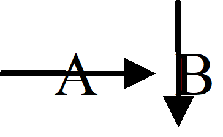
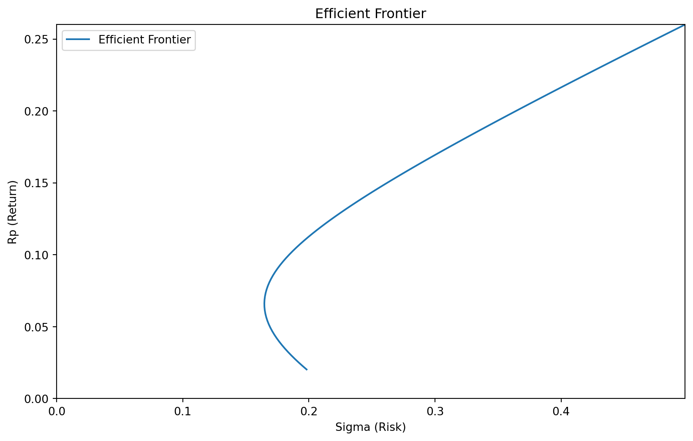
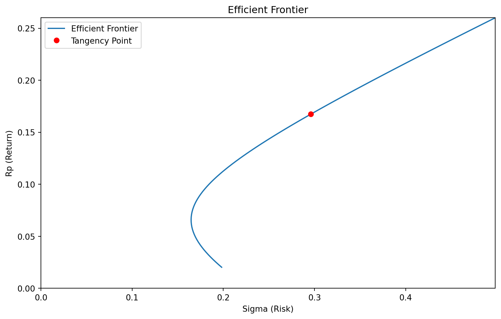
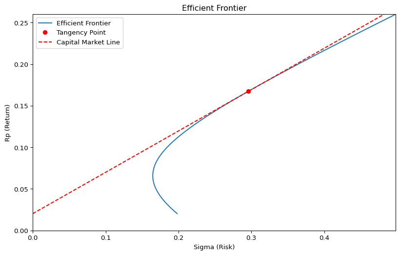
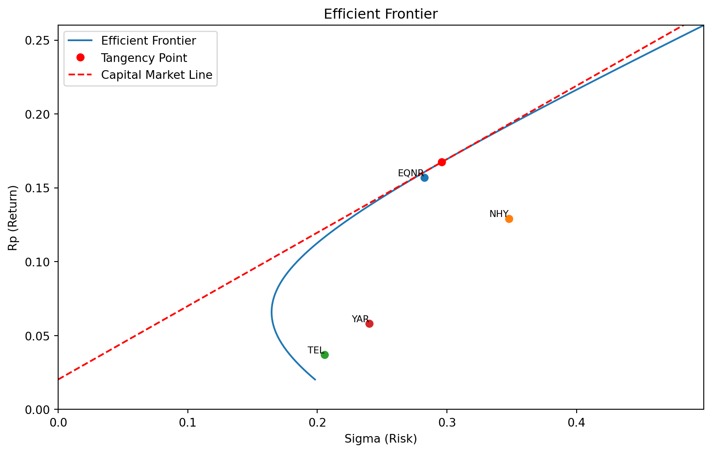

import numpy as np
np.random.randint(0,100,3)array([78, 50, 45])This lecture explores the strategic behavior of an investor in the stock market, particularly under the assumption of risk aversion, as discussed in the previous note on utility theory. Risk lovers generally prefer the most risky assets, while risk-neutral investors opt for assets with the highest returns. In contrast, a risk-averse investor seeks to maximize returns without disproportionately increasing volatility, typically measured as variance.
To calculate optimal portfolios for any number of assets, a basic understanding of matrix algebra is essential. Matrix algebra simplifies the resolution of several equations simultaneously, a process that becomes increasingly complex with the addition of variables. Using matrix functions in software like Excel and various statistical packages allows us to solve systems of equations efficiently without manually computing each one.
Matrices not only streamline the computation but also simplify notation, making the formulation of equations for optimal portfolios more manageable.
A matrix is a structured array of numbers arranged in rows and columns, essentially a set of vectors. Here’s an example of a vector:
import numpy as np
np.random.randint(0,100,3)array([78, 50, 45])Combining several vectors side-by-side forms a matrix:
np.random.randint(0,100,(2,3))array([[89, 26, 89],
[17, 88, 56]])This format is sometimes denoted as \(\mathbf{X}_{N \times K}\) to indicate the number of rows (\(N\)) and columns (\(K\)).
Matrix algebra operates under similar principles to ordinary algebra—allowing addition, subtraction, multiplication, and division (through inversion)—but it also requires adherence to specific rules.
The core operation in matrix algebra is matrix multiplication, which combines elements from the rows of the first matrix with the columns of the second. For example, multiplying a \(2 \times 3\) matrix by a \(3 \times 2\) matrix yields:
X = np.random.randint(0,5,(2,3))
Y = np.random.randint(0,5,(3,2))
result = X @ Y
print(X)
print(Y)
print(result)[[1 1 3]
[1 3 3]]
[[0 2]
[3 1]
[0 4]]
[[ 3 15]
[ 9 17]]What happens is that we sum the product of the elements in each row of the first matrix and each column of the second. You can for example check that element [0,0] of the result is the sum of the product of the first row of the first matrix, and the first column of the second. An easy way to remember this is to think of the multiplication of \(A \times B\) is to follow the lines of the letters: 
Due to the rules for matrix multiplication, it requires the number of columns in the first matrix to match the number of rows in the second.
The matrix multiplication is different from the normal multiplication in Python. Normal multiplicaiton can be done with the normal multiplication operator *. It will then multiply each element in X with the corresponding element of Y, and both matrices must be of the same size:
X = np.random.randint(0,5,(2,3))
Y = np.random.randint(0,5,(2,3))
result = X*Y
print(X)
print(Y)
print(result)[[1 1 0]
[1 1 3]]
[[2 3 2]
[3 0 0]]
[[2 3 0]
[3 0 0]]The reason for using the former method, is that the former is required for solving sets of equations.
Adding or subtracting matrices is straightforward; simply add or subtract corresponding elements. In Python, the multiplication requires numpy function, but if the matrices are numpy variables, subtraction and addition can be done with the normal operators.
import numpy as np
X = np.random.randint(0,100,(2,2))
Y = np.random.randint(0,100,(2,2))
# Addition of matrices
result_add = X + Y
print(X)
print(Y)
print(result_add)[[58 79]
[84 65]]
[[50 14]
[90 94]]
[[108 93]
[174 159]]While direct division isn’t defined in matrix operations, we can achieve a similar result by multiplying by the inverse of a matrix. The inverse of a matrix \(\mathbf{X}\), denoted \(\mathbf{X}^{-1}\), satisfies:
\[ \mathbf{X} \times \mathbf{X}^{-1} = \mathbf{I} = \begin{pmatrix} 1 & 0 & \cdots & 0 \\ 0 & 1 & \cdots & 0 \\ \vdots & \vdots & \ddots & \vdots \\ 0 & 0 & \cdots & 1 \end{pmatrix} \]
where \(\mathbf{I}\) is the identity matrix. Multiplying any matrix by \(\mathbf{I}\) results in the original matrix, akin to multiplying any number by 1.
In practice, while the concept is straightforward, the actual calculation of a matrix inverse can become complex for larger matrices and is typically handled by computers. We will not go through the method of obtaining the inverse in this course, we will in stead just utilize the numpy funciton for calculating the inverse. Specifically, we use np.linalg.inv(X). We can check that it actually complies with the definition like this:
X = np.random.randint(0,10,(3,3))
# Calculating inverse of X
X_inv = np.linalg.inv(X)
# Testing
np.round(X_inv @ X,1)The foundation we’ve established for matrix algebra now allows us to efficiently solve systems of equations. Consider solving the following pair of simultaneous equations:
\[ x_{11}a_{1} + x_{12}a_{2} = b_{1} \\ x_{21}a_{1} + x_{22}a_{2} = b_{2} \]
Here, we know the values of \(x\) and \(b\) but need to find the values of \(a\). These equations can be succinctly expressed using matrix notation:
\[\begin{equation} \mathbf{X \times a} = \mathbf{b} \label{eq:Xab} \end{equation}\]
where \(\mathbf{a}\) and \(\mathbf{b}\) are column vectors. Let us define the right hand side vector b and the coeficient matrix X randomly in python as
b = np.random.randint(0,100,(2,1))
# Define matrix X
X = np.random.randint(0,100,(2,2))
print(X)
print(b)[[91 3]
[23 5]]
[[62]
[43]]To solve for \(\mathbf{a}\), we use the inverse of \(\mathbf{X}\), provided it exists, and multiplies it with the left and right hand sides of the equation, just as we would divide with X on both sides to solve for a single equation:
\[ \mathbf{X}^{-1} \times \mathbf{X} \times \mathbf{a} = \mathbf{X}^{-1}\mathbf{b} \]
Since we know that \(\mathbf{X}^{-1}\) is the solution to \(\mathbf{X}^{-1} \times \mathbf{X} = \mathbf{I}\), premultiplying with \(\mathbf{X}^{-1}\) yields:
\[ \mathbf{a} = \mathbf{X}^{-1}\mathbf{b} \]
Hence, we have found an easy way to solve any linear equation. We can test that it works in python. Let us first find a using this approach:
a = np.linalg.inv(X) @ b
aarray([[0.46891192],
[6.44300518]])If you get a “Singular matrix” error its because we are generating X with a few random integers, which sometimes creates unsolvable systems, so just generate X and b again.
Now we can test, if the solution for a actually works, by applying it on the original equation \(\mathbf{X \times a} = \mathbf{b}\). This should yield the right hand side of th equation, b:
X @ aarray([[62.],
[43.]])Compare this with the actual b:
barray([[62],
[43]])Thus, we have identified an effective method to solve any system of equations, provided that \(\mathbf{X}\) is invertible. If \(\mathbf{X}\) cannot be inverted, it indicates that two or more equations are essentially identical, leading to an “underdetermined” system. In such cases, some equations are redundant, and there are not enough independent equations to determine the values of all variables. Remember the fundamental rule: we need an equal number of equations and unknowns to uniquely solve for each variable.
Transposing a matrix involves swapping its rows and columns. For example, a \(2 \times 3\) matrix:
\[ \mathbf{X}_{2 \times 3} = \begin{pmatrix} x_{11} & x_{12} & x_{13} \\ x_{21} & x_{22} & x_{23} \end{pmatrix} \]
transposes to:
\[ \mathbf{X}_{2 \times 3}^{\prime} = \begin{pmatrix} x_{11} & x_{21} \\ x_{12} & x_{22} \\ x_{13} & x_{23} \end{pmatrix} \]
where \(^{\prime}\) denotes the transposed matrix. For a column vector \(\mathbf{a}\), transposing and then multiplying by itself, \(\mathbf{a}^{\prime}\mathbf{a}\), calculates the sum of squares of its components.
# Example of matrix transposition
X_2x3 = np.random.randint(0,100,(2,3))
X_transposed = X_2x3.T
X_transposedarray([[74, 2],
[21, 64],
[95, 49]])Transposition is often used to conform to the requirements of matrix multiplication, where the number of columns in the first matrix must match the number of rows in the second. If this is not the case, one might transpose the first matrix to facilitate multiplication.
Deriving matrices follows similar principles to deriving polynomials. For instance:
\[ \frac{d\left( a^{2} \sigma^{2} \right)}{da} = 2a \sigma^{2} \]
applies to scalar variables, and for a matrix \(\Sigma\) and a column vector \(\mathbf{a}\), we have:
\[ \frac{d\left(\mathbf{a}^{\prime}{\Sigma}\mathbf{a}\right)}{d\mathbf{a}^{\prime}} =2{\Sigma}\mathbf{a} \]
assuming \({\Sigma}\) is symmetric. In practical terms, the derivative with respect to a here, given some values for a, is
# Derivation with matrix and vector
a = np.random.randint(0,100,(2,1))
Sigma = np.random.randint(0,100,(2,2))
# Derivative of a' Sigma a with respect to a
derivative = 2 * Sigma @ a
derivativearray([[2394],
[2064]])We can rewrite the matrix formulation in scalar form, to check that the rule is correct. The scalar form of \(\mathbf{a}^{\prime} {\Sigma}\mathbf{a}\) is
\[ \mathbf{a}^{\prime} {\Sigma} \mathbf{a} = \sum_{j=0}^{N} a_j \left( \sum_{i=0}^{N} a_i \sigma_{ij} \right) \]
You can verify that
\[ \frac{d(\mathbf{a}^{\prime} {\Sigma} \mathbf{a}) }{d\mathbf{a}}= 2 [\sum_{i=0}^{N} a_i \sigma_{i0}, ..., \sum_{i=0}^{N} a_i \sigma_{iN}] \]
We remember from above the previous chapter that with one asset, the optimal portfolio was
\[ a_{opt}=\frac{(\mu -r)}{\lambda \sigma^2} \]
From this we concluded that:
Now, let us consider the optimal investments if we have more than one asset.
Let us now assume that the investor in the previous section has a portfolio of \(N\) assets, not just one. Their wealth next period, assuming the entire amount is borrowed, is then expressed in matrix notation as:
\[ W_1 = \mathbf{a}'\mathbf{x} - \mathbf{1}r \]
where \(\mathbf{a}\) represents the portfolio weights, \(\mathbf{x}\) represents the returns, and \(\mathbf{1}\) is a column vector of ones, such that \(\mathbf{1}r\) is a column vector of the risk-free interest rate \(r\). Recall from earlier that the investor aims to maximize the difference between expected return and variance:
\[ \max_{\mathbf{a}} Z = \mathbb{E}W_1 - \lambda \frac{1}{2} \operatorname{var}(W_1) \]
\(\mathbf{x}\) now is a column vector of many normally distributed variables with different variances and expectations. We denote the expected returns by \(\mu_i\) for asset \(i\), and the associated vector of these returns by \(\mathbf{\mu}\). Given a portfolio \(\mathbf{a}\), the expected return on the portfolio then becomes:
\[ \mathbb{E}W_1 = \mathbf{a}^{\prime}(\mathbb{E}\mathbf{x}-\mathbf{1}r) = \mathbf{a}^{\prime}({\mu} - \mathbf{1}r) \]
For the variance, the risk free return \(r\) is not relevant, since means are subtracted anyway. We define the covariance matrix, all the combinations of variance and covariance between the stocks as
\[ \operatorname{var}W_1 = \mathbf{a}^{\prime}{\Sigma} \mathbf{a} = \mathbf{a}^{\prime} \begin{bmatrix} \sigma_00 & \sigma_12 & \cdots & \sigma_1N \\ \sigma_12 & \sigma_22 & \cdots & \vdots \\ \vdots & \vdots & \ddots & \vdots \\ \sigma_1N & \cdots & \cdots & \sigma_{NN} \end{bmatrix} \mathbf{a} \]
Where \(\sigma_{ij}\) is the covariance between \(i\) and \(j\), and \(\sigma_i^2\) is the variance of asset \(i\). This is the covariance matrix, denoted by the capital sigma, \({\Sigma}\).
When a vector is normally distributed we write it as \(\mathbf{x} \sim N({\mu}, {\Sigma})\).
We have now derived expressions for \(\mathbb{E}(W_1)\) and \(\operatorname{var}(W_1)\) using matrix notation. Building on the concepts from the previous lecture, we can now formulate our portfolio optimization problem as:
\[ \max_{\mathbf{a}} Z = \mathbf{a}^{\prime}({\mu} - \mathbf{1}r) - \lambda \frac{1}{2} \mathbf{a}^{\prime}{\Sigma}\mathbf{a} \]
Taking the derivative with respect to \(\mathbf{a}^{\prime}\) yields the \(N\) first order conditions:
\[ \frac{dZ}{d\mathbf{a}} = ({\mu} - \mathbf{1}r) - \lambda {\Sigma a} = 0 \]
Hence, in optimum:
\[ {\Sigma} \mathbf{a}= \frac{1}{\lambda}({\mu} - \mathbf{1}r) \]
By premultiplying with the inverse of \({\Sigma}\), we obtain the optimal portfolio:
\[ \mathbf{a_{opt}} = \frac{1}{\lambda} {\Sigma}^{-1}({\mu} - \mathbf{1}r) \]
Note that this formula looks very similar to the formula for an optimal portfolio with only one asset:
\[ a_{opt} = \frac{\mu - r}{\lambda \sigma^2} \]
In general, we may draw the same conclusions as in the case of one asset:
We will create an optimal portfolio and draw the “portfolio front” - which are the smallest possible volatility of a set of assets, for all return leves. We use the script feature of Titlon to fetch the data, and storing it in 'output/stocks.df'
import pandas as pd
#Query script for MySQL client
import pymysql
con = pymysql.connect(host='titlon.uit.no',
user="user@name.com",
password="passwordfromtitlon",
database='OSE')
crsr=con.cursor()
crsr.execute("SET SESSION MAX_EXECUTION_TIME=60000;")
crsr.execute("""
SELECT * FROM `OSE`.`equity`
WHERE year(`Date`) >= 2016
ORDER BY `Name`,`Date`
""")
r=crsr.fetchall()
df=pd.DataFrame(list(r),
columns=[i[0] for i in crsr.description])
df
#YOU NEED TO BE CONNECTED TO YOUR INSTITUTION VIA VPN,
# OR BE AT THE INSTITUTION, FOR THIS CODE TO WORK
pd.to_pickle(df,'output/stocks.df')We now reload the data, and pick the four stocks
1. has been traded at the first and last day of the sample 2. that are most traded (sorted on sum of Turnover)
We can obtain that with this code:
import numpy as np
import pandas as pd
df = pd.read_pickle('output/stocks.df')
# Defining annual risk free rate.
rf = df['NOWA_DayLnrate'].mean()*7
isin_with_first_date = df[df['Date'] == df['Date'].min()]['ISIN'].unique()
isin_with_last_date = df[df['Date'] == df['Date'].max()]['ISIN'].unique()
valid_isins = set(isin_with_first_date).intersection(isin_with_last_date)
df = df[df['ISIN'].isin(valid_isins)]
df['Name (ISIN)'] =df['Name'].str.upper().str.strip() + '(' + df['ISIN'] + ')'
# keeping only the most traded shares
res = (
df.groupby(['Name (ISIN)'])
.agg({'Turnover': 'sum'})
.sort_values(by='Turnover', ascending=False)
)
df = df.merge(res.head(4), on=['Name (ISIN)'],
how='inner')
res.head(4)| Turnover | |
|---|---|
| Name (ISIN) | |
| EQUINOR(NO0010096985) | 1.523274e+12 |
| NORSK HYDRO(NO0005052605) | 5.525255e+11 |
| TELENOR(NO0010063308) | 4.934189e+11 |
| YARA INTERNATIONAL(NO0010208051) | 4.753943e+11 |
We will now calculate the covariance matrix and the mean vector. To begin, we’ll create a function that reformats the data from its long format (where stock prices are listed sequentially in a single column) to a wide format. In this wide format, unique dates will be in the first column, with subsequent columns containing prices for each stock.
def get_matrix(df, field):
"""Converts the df to a matrix df that can
be used to calculate the covariance matrix"""
import pandas as pd
df['Date'] = pd.to_datetime(df['Date'])
df_unique = df.drop_duplicates(
subset=['Date', 'ISIN'])
pivot_df = df_unique.pivot(index='Date',
columns='Symbol',
values=field)
pivot_df = pivot_df.dropna()
# Annualized weekly returns
df_weekly = pivot_df.resample('W').sum()
return df_weekly
#X is a matrxi with e
X_df = get_matrix(df, 'lnDeltaP')
X_df = X_df.sort_index()
X_df| Symbol | EQNR | NHY | TEL | YAR |
|---|---|---|---|---|
| Date | ||||
| 2016-01-10 | -0.118288 | -0.137636 | -0.008125 | -0.058065 |
| 2016-01-17 | -0.060966 | -0.054818 | -0.085838 | -0.047905 |
| 2016-01-24 | 0.060966 | 0.023505 | 0.049143 | 0.001741 |
| 2016-01-31 | 0.074498 | 0.024710 | -0.007077 | -0.053584 |
| 2016-02-07 | 0.027490 | 0.065780 | -0.029552 | 0.024170 |
| ... | ... | ... | ... | ... |
| 2024-03-10 | 0.026170 | 0.016989 | -0.026157 | -0.040846 |
| 2024-03-17 | 0.023882 | 0.038669 | 0.019681 | 0.016898 |
| 2024-03-24 | 0.032784 | 0.048790 | 0.022694 | 0.026865 |
| 2024-03-31 | -0.003143 | -0.023257 | 0.026117 | -0.004525 |
| 2024-04-07 | 0.046639 | 0.126744 | 0.025854 | 0.044496 |
431 rows × 4 columns
Wit this data, it is relatively easy to calculate covariance and the means vector
# Converting X to a numpy array:
X = np.array(X_df)
# Calculating the covariance
cov_matrix = np.cov(X, rowvar=False)
# Calculating the means vector, and reshaping it to a
# column vector.
means = np.mean(X, axis=0).reshape((X.shape[1],1))We now turn to portfolio front. The portfolio front represents the volatility of the portfolio with the least variance, for a given portfolio return. Hence, we want a function of portfolio return that represent the minimum variance portfolios.
It turns out that by defining a few simple scalars, there is a reasonably simple expression for the set of minimum variance portfolios. The scalars are:
\[ A = \mathbf{1}^{\prime}{\Sigma}^{-1}\mathbf{1} \]
\[\begin{equation} B = \mathbf{1}^{\prime}{\Sigma}^{-1}{\mu-\mathbf{1}r} \label{eq:B} \end{equation}\]
\[ C = {\mu-\mathbf{1}r}^{\prime}{\Sigma}^{-1}{\mu-\mathbf{1}r} \]
With these definition, the portfolio front, representing all minimum variance portfolios for a given expected return and a total investment of 1, is
\[ {\sigma}_{opt} =\frac{1}{A}+\frac{ \left(\mu_{opt}-\frac{B}{A}\right)^2}{C-\frac{B^2}{A}} \] where \(\mu_{opt}={\mu}^{\prime}\mathbf{a}\)
This formula automatically ensures that the sum of all the portfolio weights are 1. Now, let us define these variables, and the function. A, B and C in python:
ones = np.ones((len(means),1))
A = (ones.T @ np.linalg.inv(cov_matrix) @ ones)[0][0]
B = (ones.T @ np.linalg.inv(cov_matrix)
@ (means-rf))[0][0]
C = ((means.T-rf) @ np.linalg.inv(cov_matrix)
@ (means-rf))[0][0]The portfolio front function, that returns the volatility associated with the minimum variance portfolio for a given expected_excess_return can then be defined as:
def portfolio_front(expected_excess_return, a, b, c):
r = expected_excess_return
minimum_variance = (1/a
+ ((r - abs(b)/a)**2) / (c - b**2/a))
minimum_volatility = minimum_variance**0.5
return minimum_volatilityLet us plot this
With a defined portfolio frontier function, we can now plot the portfolio frontier. To make the weekly returns comparable on an annual scale, we multiply them by a scaling factor, plot_scale, set to 52. We can simply multiply the returns, because returns in Titlon are conveniently defined as log returns, calculated as \(\log(x_{t}) - \log(x_{t-1})\), rather than the typical relative return \(\frac{x_{t} - x_{t-1}}{x_{t-1}}\).
from matplotlib import pyplot as plt
#Creating plot
fig, ax = plt.subplots(figsize=(10, 6))
plot_scale = 52
MAX_AXIS = 0.005
#applying the function
rp_values = np.linspace(0, MAX_AXIS-rf, 100)
sigma_values = portfolio_front(rp_values, A, B, C)
#plotting, after annualizing the weekly data
ax.plot(plot_scale**0.5*(sigma_values), plot_scale*(rp_values+rf),
label='Efficient Frontier')
#plot settings:
ax.set_xlim([0, np.max(sigma_values*plot_scale**0.5)])
ax.set_ylim([0, (np.max(rp_values)+rf)*plot_scale])
ax.set_xlabel('Sigma (Risk)')
ax.set_ylabel('Rp (Return)')
ax.set_title('Efficient Frontier')
ax.legend()
A key advantage of using log returns is that they account for symmetry in gains and losses. For example, with relative returns, a 10% gain followed by a 10% loss results in a net loss of 1%. However, with log returns, a 10% gain and a 10% loss precisely offset each other, leaving you with no net change from the starting point.
Let us now add the point for the optimal portfolio. The optimal portfolio is
\[ \mathbf{a}_{opt} = \frac{1}{\lambda}{\Sigma}^{-1}({\mu} - \mathbf{1}r) \]
The total cost (sum) of this portfolio is
\[\begin{equation} \mathbf{1}^{\prime}\mathbf{a}_{opt} = \frac{1}{\lambda} \mathbf{1}^{\prime}{\Sigma}^{-1}({\mu} - \mathbf{1}r) = B \label{eq:sum_eq} \end{equation}\]
Where the last equality follows from Equation \(\ref{eq:B}\). The normalized optimal portfolio is then
\[\begin{equation} \mathbf{a}_{norm} = \frac{ {\Sigma}^{-1}({\mu} - \mathbf{1}r) } { \mathbf{1}^{\prime}{\Sigma}^{-1}({\mu} - \mathbf{1}r)} = \frac{ 1 } {B}{\Sigma}^{-1}({\mu} - \mathbf{1}r) \label{eq:norm_opt} \end{equation}\]
The expected return of the optimal portfolio on the frontier, is then
\[ \mu_{port}=({\mu} - \mathbf{1}r)^{\prime}\mathbf{a_{norm}} = \frac{({\mu} - \mathbf{1}r)^{\prime}{\Sigma}^{-1}({\mu} - \mathbf{1}r)}{ \mathbf{1}^{\prime}{\Sigma}^{-1}({\mu} - \mathbf{1}r)} \]
Which is simply, according to the previous definitions of B and C: \[ \mu_{port}=\frac{C}{B} \]
Let us add that to the plot
# Calculating the tangency point of the normalized
# optimal portfolio
tangency_sigma = portfolio_front(C/B, A, B, C)
#plotting it, after annualizing the weekly data
ax.plot(plot_scale**0.5*tangency_sigma,
plot_scale*(C/B + rf),
'ro',label='Tangency Point')
ax.legend()
fig
Let us now draw a tangency line from the risk free interest rate rf to the optimal portfolio point. The slope will be the Sharp-ratio
\[ S=\frac{C/B}{f(C/B)} \]
where \(f(C/B)\) is the portfolio front function portfolio_front(C/B, A, B, C) at C/B
sigma_range = np.linspace(0, np.max(sigma_values), 100)
# Plotting the portfolio front, after annualizing the
# weekly data
ax.plot(plot_scale**0.5*sigma_range, plot_scale*(rf
+ sigma_range*(C/B)/tangency_sigma),
color='r', linestyle='--',
label='Capital Market Line')
ax.legend()
fig
It is interesting to check where the original stocks that span the front, are in the picture. Let us add the cooridnates of these. We first calcualate their mean and standard devaition, and then plot them.
expected = X_df.mean()*52
std = X_df.std()*52**0.5
for series in expected.index:
ax.scatter(std[series], expected[series], label=series)
ax.text(std[series], expected[series], series, fontsize=8, ha='right', va='bottom')
fig
Finally, we might want to evaluate the actual amounts that we should invest in each company, if we wanted to invest in the optimal portfolio. The actual portfolio, normalized to sum to one, is as previously implied
\[ \mathbf{a}_{norm} = \frac{1} {B} {\Sigma}^{-1}({\mu} - \mathbf{1}r) \]
where \(B\) is the sum of the optimal portfolio, as previously defined in \(\ref{eq:B}\)
We can code that as
#Calculating the normalized optimal portfolio
opt_port = np.linalg.inv(cov_matrix) @ (means-rf)/B
#Calculating the returns of the optimal portfolio:
X_df['Optimal'] = X @ opt_port
#Saving the dataframe for later use:
pd.to_pickle(X_df, 'output/X.df')
# inserting the portfolio into a data frame for display
d = {}
for i in range(len(opt_port)):
d[X_df.columns[i]] = [f"{np.round(opt_port[i][0]*100,0)}%"]
print("Hence the optimal portfolio in this case is")
pd.DataFrame(d)Hence the optimal portfolio in this case is| EQNR | NHY | TEL | YAR | |
|---|---|---|---|---|
| 0 | 93.0% | 22.0% | -7.0% | -8.0% |
Coding Challenges:
Challenge 1: Obtain a three or four return series for portfolios, for example your portfolio, the market portfolio and the factors at titlon and calculate the variance-covariance matrix and the means
Challenge 2: Use your calculated covariance matrix and means, and the code provided above, to draw a portfolio front.
Challenge 3: Use the same information to plot the points of each portfolio in the same chart.
Challenge 4: Calculate the optimal portfolio and place it in the chart, together with the capital market line